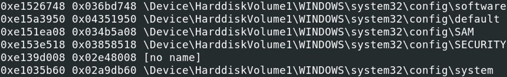
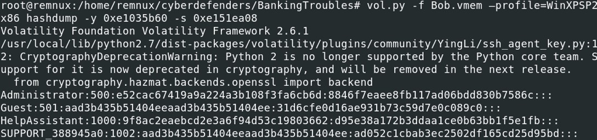
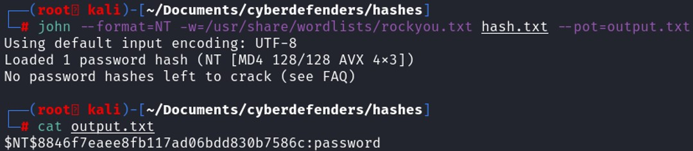
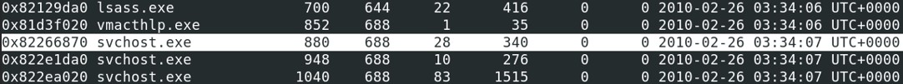
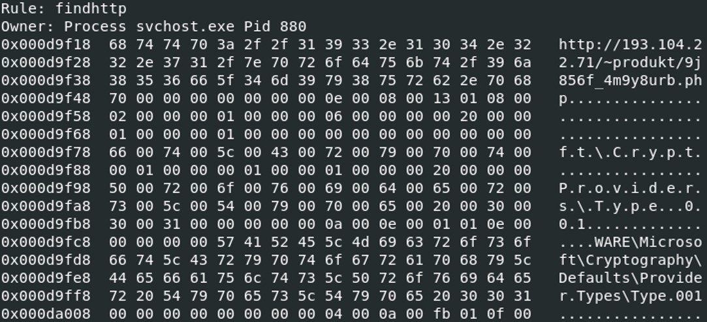
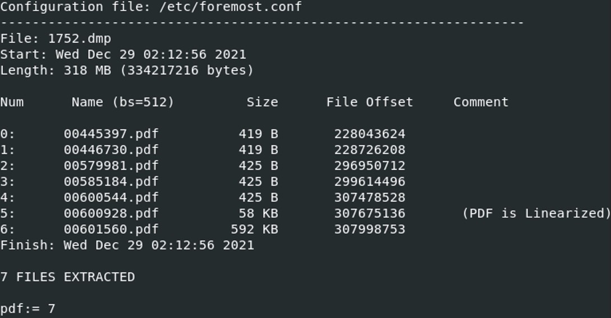

The given resource is a .vmem file. Volatility is a tool that can be used to retrieve some crucial information on the memory image.
If you are using volatility2, you need to determine the profile used for the memory analysis.
vol.py -f Bob.vmem imageinfo
The profile used will be WinXPSP2x86. What was the local IP address of the victim's machine ?
When analyzing a suspicious system, it is interesting to know if the system is communicating with a suspicious IP address.vol.py -f Bob.vmem --profile=WinXPSP2x86 connections
What was the OS environment variable's value ?
The function envars in volatility displays the environment variable of the system.vol.py -f Bob.vmem --profile=WinXPSP2x86 envars | grep OS
What was the Administrator's password ?
In a Windows system, it exists several registry hives. The ones that interest us to recover the password are the SAM (-s) and the SYSTEM (-y) hives. First we must list the registry hives.vol.py -f Bob.vmem --profile=WinXPSP2x86 hivelist

The virtual address of the SAM hive is 0xe151ea08 and the virtual address of the system hive is 0xe1035b60. Now that we have the virtual addresses of the SAM and system hives, we can proceed to the password cracking of the system.
vol.py -f Bob.vmem --profile=WinXPSP2x86 hashdump -y 0xe1035b60 -s 0xe151ea08

Administrator:500:e52cac67419a9a224a3b108f3fa6cb6d:8846f7eaee8fb117ad06bdd830b7586c::: Here is the structure of the hash : Username:SID:LMhash:NThash
The difference between LM and NT hashes is that the LMhash is case insensitive while NThash is case sensitive. LMhash support only 142 characters while NThash support 65536 characters.
With the retrieved hash, let's use the tool John the Ripper to crack it.
john --format=NT -w=/usr/share/wordlists/rockyou.txt hash.txt --pot=output.txt

The administrator's password is "password". Which process was most likely responsible for the initial exploit ?
To look closely to the process running, pslist, pstree can be used to list the running process at the time the memory dump has started.vol.py -f Bob.vmem --profile=WinXPSP2x86 pstree
 AcroRd32.exe has been launched by firefox.exe, which shouldn't be the case for a legitimate Acrobat Reader program.
AcroRd32.exe has been launched by firefox.exe, which shouldn't be the case for a legitimate Acrobat Reader program. The process ID of the AcroRd32.exe is 1752, and its parent process ID is 888. Let's take a look at the remote connection to see if the program is connected to a suspicious IP address.
vol.py -f Bob.vmem --profile=WinXPSP2x86 connections | egrep "^Offset|888|1752"
Taking a look at the open network connection, we notice that the IP address 212.150.164.203 on the port 80 appear twice with both PIDs.
A suspicious URL was present in process svchost.exe memory. Provide the full URL that points to a PHP page hosted over a public IP (no FQDN).
Looking at the open network connection of the system, we see that there is another process ID (880) that remotely communicate with another suspicious IP address. Listing the processes shows that the PID 880 belongs to a svchost.exe process.  Yarascan is a volatility plugin that scan a memory image for a yara signature. First, let's create a yara rule that will trigger in case of a http/https detection.
rule findhttp{
meta:
author="HakkYahud"
description="Finding malicious http(s)"
create="09/08/2022"
&strings:
$https="https://"
$http="http://"
$php=".php"
condition:
($https and $php) or ($http and $php) }
meta:
author="HakkYahud"
description="Finding malicious http(s)"
create="09/08/2022"
&strings:
$https="https://"
$http="http://"
$php=".php"
condition:
($https and $php) or ($http and $php) }
vol.py -f Bob.vmem --profile=WinXPSP2x86 -y findhttp.yar yarascan -p 880

The result of the yarascan on the process 880 has found an URL "hxxp[:]//193[.]104[.]22[.]71/~produkt/9j856f_4m9y8urb[.]php". Extract files from the initial process. One file has an MD5 hash ending with "528afe08e437765cc". When was this file first submitted for analysis on VirusTotal?
The initial exploit process is AcroRd32.exe with a PID 1752. To start we will dump this process.vol.py -f Bob.vmem --profile=WinXPSP2x86 memdump -p 1752 -D ./dumps
Once the memory dump has been retrieved, foremost is a great tool to extract the content of the memory dump, it will recover the files by looking at the headers, footers and internal datastructure of the memory or disk images.
foremost -t pdf 1752.dmp

Foremost found and extracted 7 pdf files. We must find the file that has a hash ending with "528afe08e437765cc".
md5sum * | grep 528afe08e437765cc
What was the PID of the process that loaded the file PDF.php?
Strings 1752.dmp | grep PDF.php